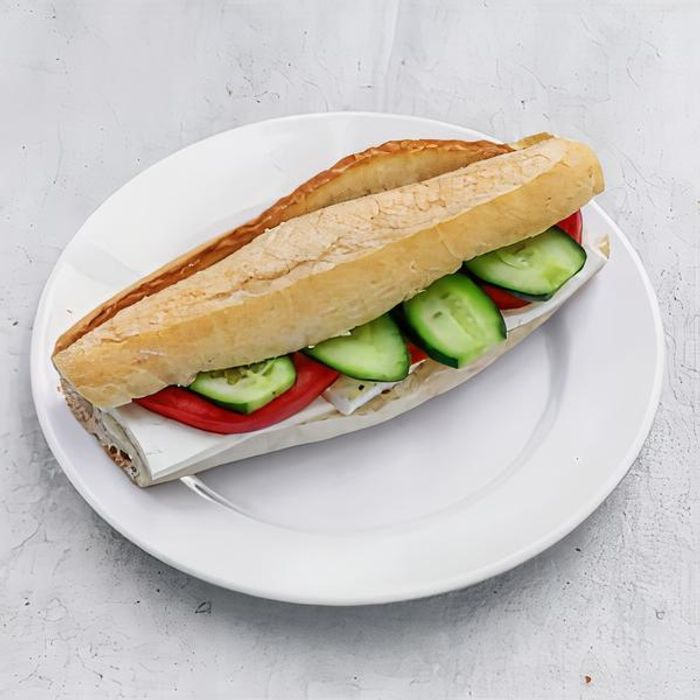

Sandviçler
Kaşarlı Sandviç
Kaşarlı Sandviç · Sandviçler menüsünden.
215 TL
- Gramaj / porsiyon
- 160–220 gPorsiyon büyüklüğüne göre değişebilir.
- Alerjen bilgisi
- Buğday (gluten) · Süt · Yumurta (tarife bağlı)Ürün adı ve tipik tarife göre ön bilgidir. Kesin içerik ve çapraz bulaşma bilgileri henüz doğrulanmamıştır.